档案记录
朱类调查案
#20250003
#202500030H
等级:midden-
#2024000505记录后, 已长期未出现朱相乡类的朱类生物, 经确定, 朱因真实存在且与朱相乡为同类。
#2025000301
等级:tall
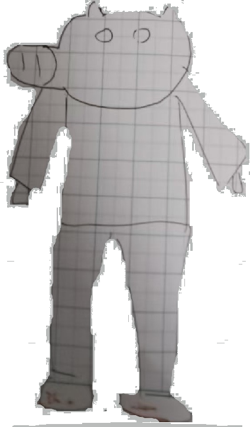*朱人分为矮朱与高型朱,朱相乡为高型朱,朱因为矮朱
#2025000302
等级:main(locked)
-----------------矮朱-------------------------------高型朱
大部分矮朱身高在于1.4m~1.5m--------------大部分高型朱身高大于1.6m
目前仅有发现一个高型朱与与一个矮朱，暂无其他---
(后发现，此文字后期添加)
朱因行为特征(矮朱)
在一些情况下，如果此物种会行动，则有概率如左图一样执行"脸拍"
脸拍:在脸上光滑状态将失去时进行对右手与脸部的运动(对矮朱自己的脸轻拍)
#2025000303
等级:midden
朱因攻击力与战力
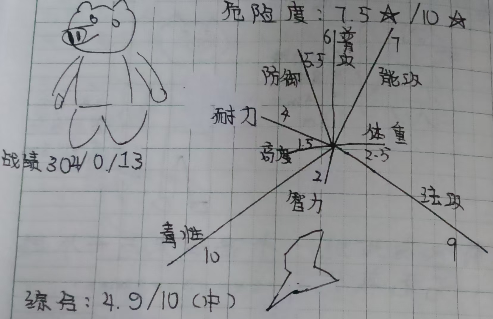#2025000304
等级:main(locked)
朱因的毒性非常之高,如被其触碰位置在20小时之内不清洗,则会腐烂,如腐烂后3小时内不
清理，则会致4
朱油是碰到朱因产生的物质，无限，但如果一小时内无出现再次触碰或出现朱油的物质(或
此物质碰到朱油)比朱因诡异则免疫(或立即消失)
#2025000305
等级:tall+(locked)
在乡星研外出研究时, 发现了另一个朱类生物，但体型存在一定区别
该类*画像
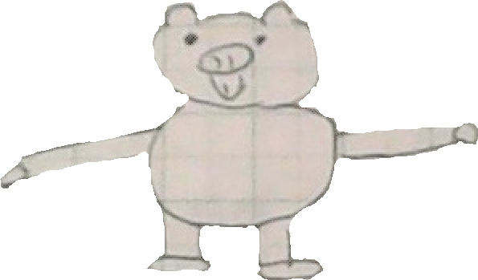*[该类]
此类属于扁朱
这类朱类经研究发现此为独立分支
朱类
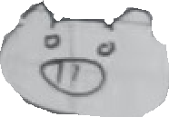矮朱-----------------------------高型朱-----------------------------------扁朱
矮朱:毒性与法攻偏高
高型朱:智商与身高偏高
扁朱:防御与体重偏高
#2025000306
等级:tall
在外出研究所发现的生物命名为"朱为"
朱为画像
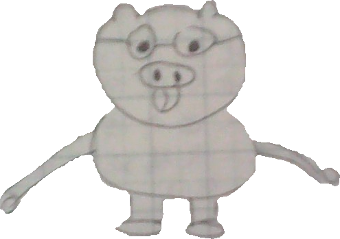#20250007
等级:main(locked)
朱为(扁朱)行为特征
[1]
可能发出雌朱声音
1.在苏醒时使周围物体震动并发出微臭味,之后持续一段时间
2.自发发出
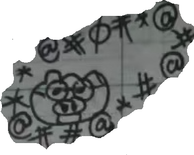
[2]
语言干扰
1. 你们都是Gay
2. 我****,****
3. ...(健康语言)
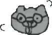
[3]
勾引同性
(但没有一次成功,该朱精神症肠)
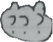
[4]
语言干扰
1. 把有味的纸团扔在他人附近
2. 造他人谣并传播,之后栽赃其他人传播或造谣
3. ...(栽)
#2025000308
等级:tall(locked)
朱为战力统计
危险度:7.891*/(13-3)*
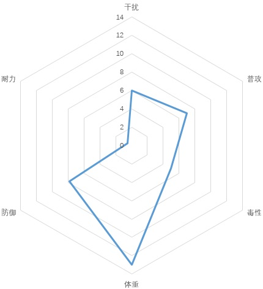
综合*:6.0/10中上度(实际中度4.1/10)
*[综合]
一个值最多记为10计算,为0的值不参与记录,朱为有:自己、智力为0
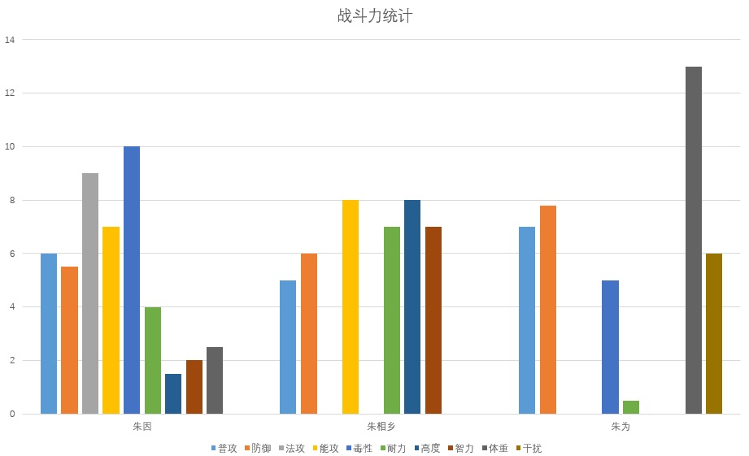
朱因 均值:4.9/10(中等)
朱相乡 均值:4.9/10(高能)WARRING*
朱为 均值:4.9/10(虚高,中等,实际为4.1)
*智力等于正常人,曾仿制过组织档案(非原内容)
#2025000309
等级:tip(lower)
补充信息
朱因:又名mini猪
朱为:也称"朱挺","朱亭","朱停"
其他
特别声明:
朱类不区分是否出现眼镜的问题,前面出现数多仅为巧合
#2025000310
等级:tall+(locked)
朱因喝水状态
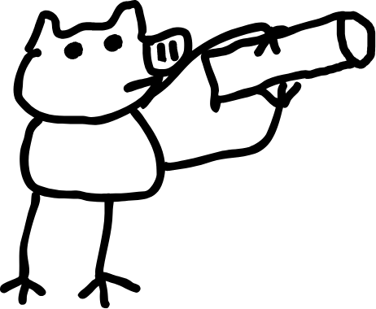朱因喝水时水杯会横置与水平状态,尤为特殊(有微倾斜)
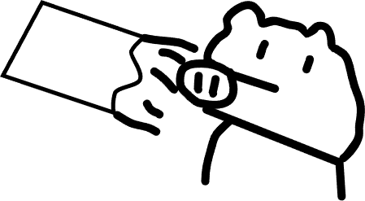头部会上扬